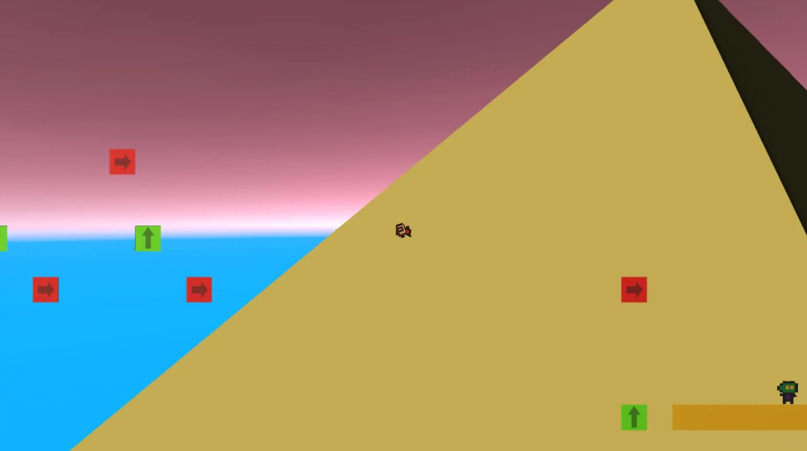
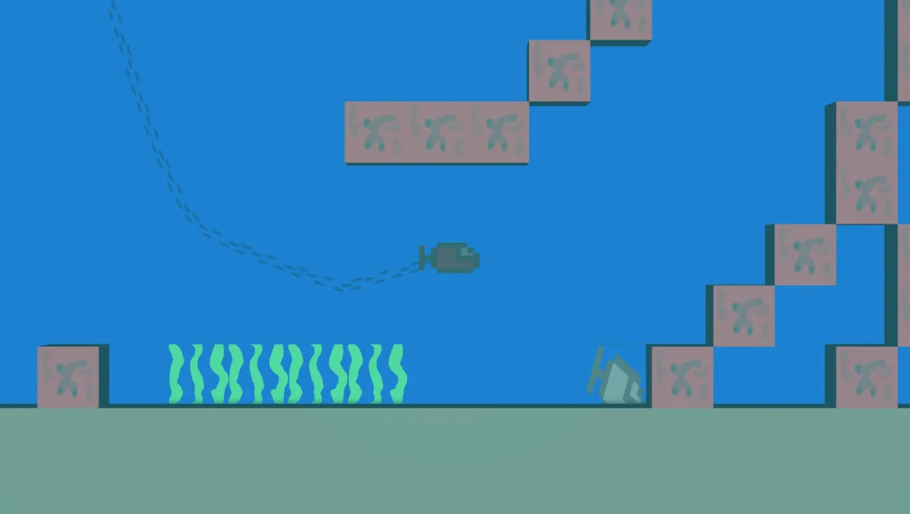

Jackson Clayton
Game Designer/Developer



Development Timeline:
In the 8th grade I made a short 2D grid based platformer on Scratch called “Box Adventure”. I remade it in August of 2020 in Unity. I decided to continue the project as a short multi world game.
I was originally not going to have any enemies and make it purely a test of platforming skill, but a big realization I made with the game is that players get bored when they are only being tested on one thing. Even if jumping on zombies interrupts the platforming it is a very much needed break.
This was probably one of the fastest projects I have done in a ratio of playtime to work time. Level design went very smoothly and didn’t need many changes later on.
The final addition to Drake Danger was four water levels that take place in between each world. I suspect that players will despise these levels, but the playtesters were a lot less likely to stop or quit the game because they had been doing the same thing for 30 minutes, even though it is tedious it makes the other parts of the game even better.
Development Focus:
I grew up playing a virtual console version of the Game Boy game Super Mario Land on my 3DS. At the time, I had gained an appreciation for the game’s simplicity in artstyle and level design. I wanted to make something similar to Super Mario Land, although it came out a lot more like the Donkey Kong Country series. I say this because the levels in Drake Danger focus more so on introducing elements and exploring them than the tight platforming of the Mario games.
The game takes around 30 minutes to complete (similar to flying frags world tour), but you have infinite lives and the game is a lot less fast-paced and a lot easier. I designed it without saves in mind because I wanted to stick with being as close to Mario land as possible.